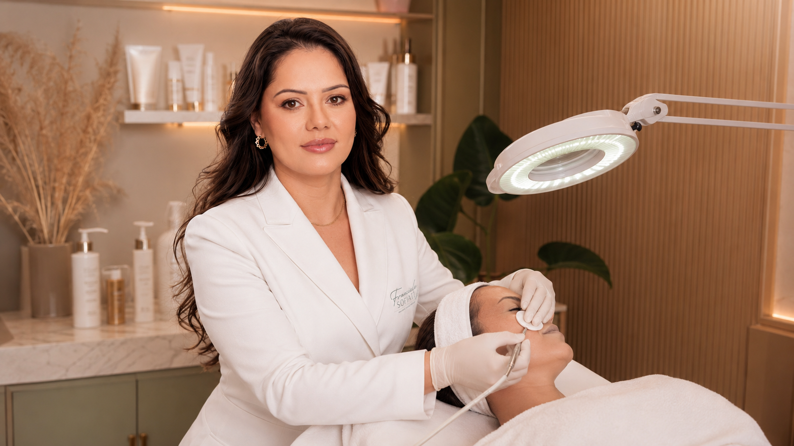

JORNAL Limpeza de pele e poros
Filamentos sebáceos ou cravos: limpeza profunda remove os dois?
Filamentos sebáceos são estruturas normais que podem parecer cravos. Entenda por que identificar a queixa importa antes de pensar em extração ou limpeza de pele.

01 · Pontinhos no nariz podem ter mais de uma explicação
Filamentos sebáceos não são cravos
Pequenos pontos no nariz, queixo ou bochechas podem ser cravos, filamentos sebáceos ou outra característica da pele. A aparência sozinha não confirma o que são, mas essa diferença muda a expectativa sobre o que uma limpeza profissional pode fazer.
Filamentos sebáceos revestem os poros e ajudam o sebo a chegar à superfície. A Cleveland Clinic descreve-os como uma parte normal da pele. Cravos abertos, por sua vez, são comedões de acne com um tampão no poro. Eles podem parecer semelhantes de perto, mas não são a mesma estrutura.
02 · O que a limpeza profissional pode e não pode prometer
Retirar o conteúdo visível não apaga uma estrutura normal
Uma limpeza pode incluir etapas distintas conforme a avaliação e o protocolo, mas o nome do serviço não confirma que haverá extração nem que cada ponto visível seja um cravo. Filamentos sebáceos voltam a ficar aparentes porque fazem parte do funcionamento do poro; não é realista prometer removê-los de forma permanente.
A orientação da Academia Americana de Dermatologia sobre poros também recomenda evitar apertar ou escavar a pele: a irritação pode deixar os poros mais aparentes. A necessidade de cuidado profissional depende da queixa e não se resolve tentando retirar todos os pontos.
03 · Extração repetida pode irritar
Mais pressão não significa uma limpeza melhor
A Cleveland Clinic alerta que apertar filamentos pode irritar ou até machucar a pele, e que eles reaparecem. Isso não quer dizer que toda extração profissional seja inadequada; significa que a técnica deve ter uma indicação clara e que não se deve tratar uma característica normal como algo que precisa desaparecer por completo.
Evite cutucar ou usar ferramentas em casa para testar se um ponto é removível. Se houver dor, inflamação, cicatrizes, lesões que mudam ou dúvida sobre o que está vendo, procure avaliação de saúde apropriada em vez de presumir que a resposta seja uma limpeza.
04 · Perguntas úteis na avaliação
Converse sobre a queixa e o resultado possível
- Os pontos parecem comedões, filamentos sebáceos ou outra alteração?
- A limpeza proposta inclui extração? Como se decide quais lesões abordar?
- O que é razoável esperar e o que tende a reaparecer por ser parte normal da pele?
- Que sinais fariam a equipe recomendar avaliação dermatológica antes de qualquer extração?
A avaliação individual ajuda a esclarecer a finalidade do serviço de limpeza de pele profunda. Ela não substitui o diagnóstico médico de acne ou de outras condições.
05 · Referências e limites
Fontes consultadas
As fontes ajudam a diferenciar filamentos sebáceos de cravos e explicam por que apertar os poros pode irritar. Não confirmam o que é uma lesão específica sem exame, nem definem o protocolo desta clínica.